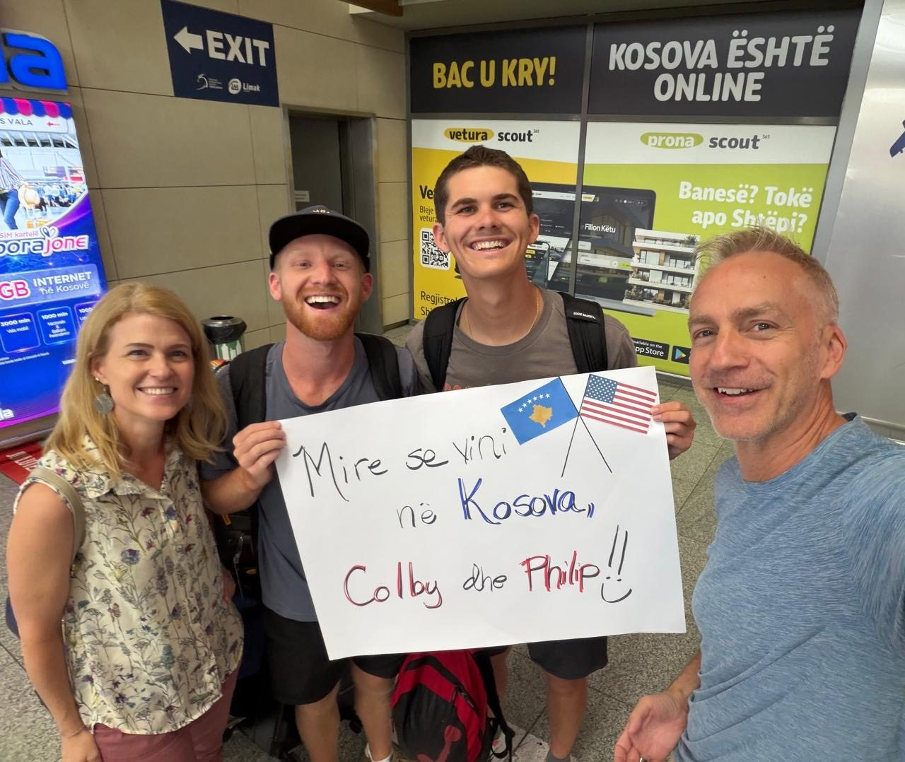
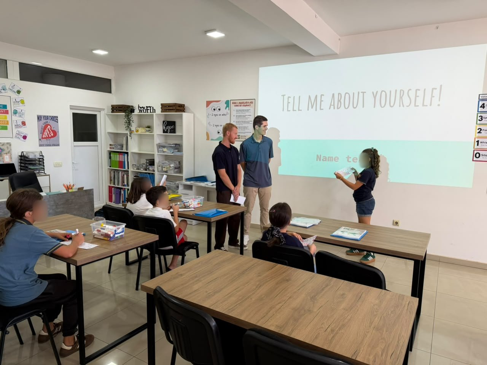
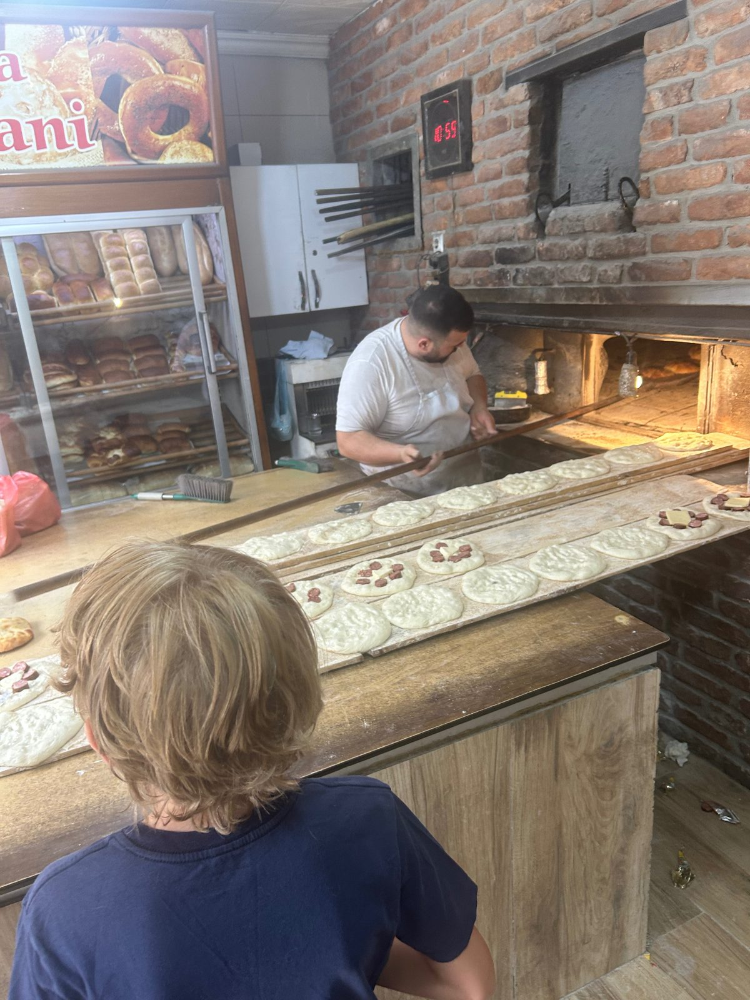
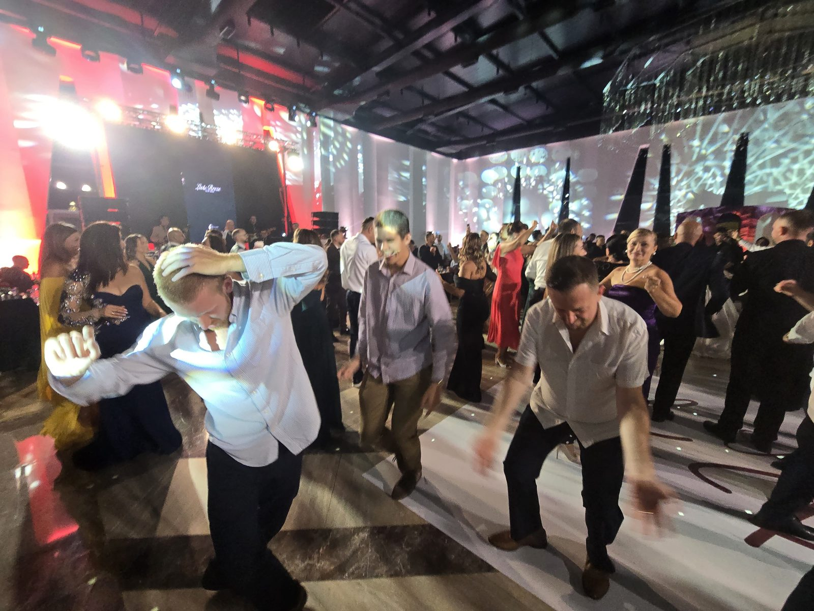
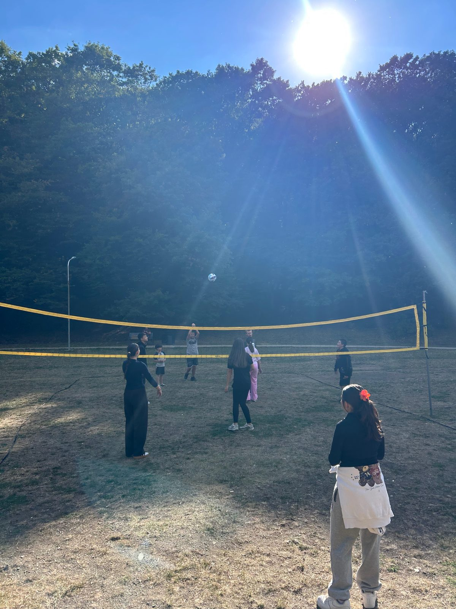
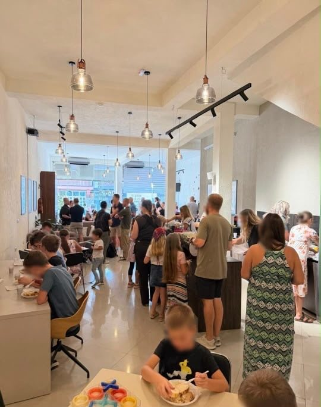
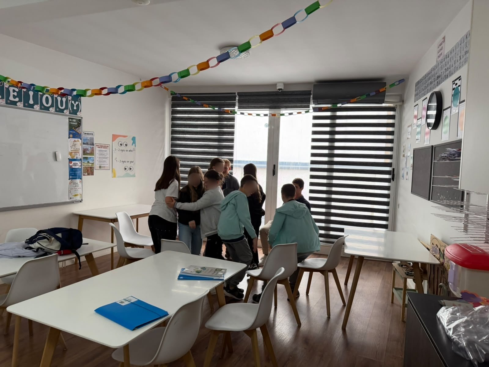
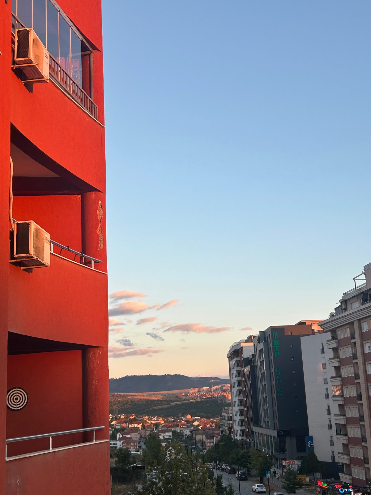
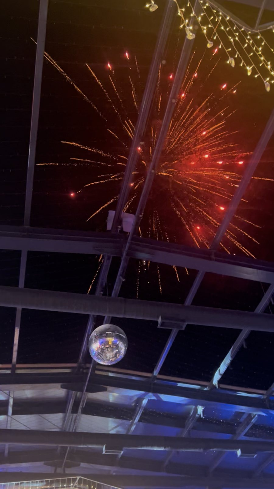

JOURNAL #002 · SEPTEMBER 2026
Learning to Listen
My first month in Prishtina has been full of teaching, new relationships, cultural experiences, ministry opportunities, and learning how to listen.

Teaching
Within a week of arriving, Colby and I began teaching English classes to students at the center—which has been so amazing! The kids are incredibly sweet, and some of them I’m convinced are speaking English better than I was at their age. It has been really fun growing in confidence as a teacher, it has allowed me to be myself more in the classroom, and I hope has allowed the students to feel the same way!
Teaching English was one of my biggest fears coming into this adventure, particularly because of the challenging experiences I had this past summer when working with a similar age group of kids! I think the Lord used this past summer to grow me in patience and capability with this age group, and I am also just so grateful for how kind these kids are! They also are such an asset for learning Albanian—they think it is so exciting that someone wants to know their language!

Cultural Experiences
To begin, it is a privilege that English is my native tongue (more on that later). Most people speak at least passable English in Prishtina, and many are fluent. That has eased the experience, because Albanian is an incredibly difficult language to learn. That being said, learning Albanian has been a super positive experience for me, my lessons have challenged my mind in new ways, and I love it.
It has been interesting experiencing a majority secular, Islamic culture. A local described it as “in Kosovë we are not Christians, we are not Muslims, we are Albanians”. This distinction is helpful for understanding what makes Kosovo unique, it is a deeply ethnically proud culture, and values its history deeply. That has been fascinating to learn about, and I hope to discover more about what that means in the lived realities of Kosovars.
Still, the country is majority Muslim, which has been an adjustment—Mosques are all over the city, and you can hear imams over loudspeakers, reciting the Adhan (call to prayer) pretty much any place in the city.

Saving the best for last, Nderim somehow scored Colby and I an invitation to a traditional Albanian wedding in Gjakova, his home town. There is simply no way to describe it in words, but it was such an amazing experience, my ears are still recovering!

Clubs and Youth Group
Colby and I have been entrusted with the Sports Club at the community center, and we are excited to get to know kids better through sport! Also, we are going to start Boys Club next month, which should be a blast.
Elsewhere, Colby and I—alongside another missionary named Nathan, are getting to run the Youth Group at the church we attend! This is such a cool opportunity, and we feel really thankful for the experience that we gained from leading Young Life in college. I am excited to be challenged and grow through real-time ministry experience in this!

Praises
- The Scotts — Rob and Heidi are our host missionaries, and they run the community center. They have been so welcoming, and have helped tremendously with making the transition to Kosovo as easy as possible. They have equipped us well for serving in the community center, and their faith and trust in me with teaching and leading clubs has been awesome!
- The Rudis — Brittani and Nderim, Colby’s sister and brother-in-law, have welcomed me with open arms into their lives, which I am so thankful for. They live in the same apartment building as us (because they found our apartment for us), invite us over for dinner often, and bring us along in their family adventures with their four kids. I look forward to getting to know the family better, I seriously can’t thank them enough for how much they have eased the burden of the cross-cultural experience.
- The Bakers — Zach and Haley are long-term missionaries that also serve at the community center. They have four girls under the age of ten, who are all full of joy and energy! The Bakers have had Colby and I over for dinner twice, which have been nights of beautiful chaos, the girls love playing card games, school, and most of all having guests! In the midst of the chaos, Zach and Haley are so kind, and have sought to know us more deeply—it is really life-giving spending time with them.
- Kosovars — Every Kosovar person I have encountered has been incredibly kind, especially when I have gotten to spend time with them! Colby and I have gotten coffee with several locals, and formed friendships already (shoutout Redon). Our language teacher is incredibly kind and patient, and her children all spend a lot of time at the center. Her husband insisted on taking Colby, Redon, and I out to coffee the same day we met him—I don’t think I have laughed more in my time here than in the hour that I spent with him!

Prayer Requests
- The nation of Kosovo: Hashim Thaçi, the former president and prime minister of Kosovo, was sentenced to 25 years in jail for war crimes in the Kosovo war. The Kosovar people are in disbelief, and feel that the international courts failed to acknowledge the context of his actions, and there is a lot of unrest and hopelessness in Kosovo right now because of this ruling. Please pray for peace in the country, and that Christ would speak into their heartache during this season of pain. Pray also for me, that I would be faithful to hear their stories, and understand their pain more deeply.
- Colby and I’s friendship: I am so grateful for Colby, and it has been really sweet growing our already strong friendship. Pray that this experience would be a precious one for our friendship, and that we would learn more about what it means to love our neighbor by serving one another.
- Youth group + service in the center: Pray for me to be equipped during my time serving in ministry and through teaching classes. I want to be a reflection of Christ in the way I lead, and the way I treat others.
- A present mind: It is easy to long to be back home, and looking forward to being reunited with family, friends, and with Hadley. That is a reality of serving abroad, but also can be incredibly distracting, and can make it hard to fully invest in my community here. Pray that I would be fully immersed here, while not neglecting my relationships back home!

Reflections / Story
Since arriving in Prishtina, I have been confronted with the fact that I am in a foreign land. No matter how hard I try to conceal my American identity, my accent and poor Albanian give me away. It feels really weird just having a conversation with Colby walking down the sidewalk and having people glance at you, shocked to hear an American accent. This is especially interesting (and helpful honestly) that most people in Prishtina speak some English, and many young people are fluent.
Since that is the case, and because I am surrounded by quite a few missionaries and fellow Americans, it could be really easy to resist assimilation and connecting deeply with locals here. That, of course, would betray the whole purpose of serving on mission in a foreign place though.
I was specially blessed by my time leading Young Life at East Rockingham High School in Elkton, Virginia. For those who don’t know, Elkton is a place where hopelessness runs rampant, and there are a lot of broken families, poverty, drug abuse, and neglect. That is vastly different from the experience I had growing up, and even what other high schools in the area experience.
It was certainly a challenge for me at first, having grown up with financial stability, two loving parents, and a community around me at JMU that was incredibly supportive and life-giving. How was I supposed to relate to these kids, or share the gospel in a way that speaks to their circumstances, when I don’t even understand their circumstances?

By no means was I perfect, and it was incredibly frustrating and slow serving at East Rock for a while. It took forever to have kids show up to events, and even when they did I feel that I struggled to relate with them. However, the Lord was using that time to grow me, and teach me about the struggles of being a high schooler in Elkton, through slowing down, listening, and being with students throughout their difficulties in their lives.
One of the sweetest gifts of college was getting to see the guys I lead turn towards Christ, and trust him with their struggles. It was a blessing to get to pray with them, and offer them counsel throughout their challenges. To earn that trust, I had to be present with them, and immerse myself in their lives—I had to know them, and learn to speak truth into their context.
So what does this have to do with Prishtina?
Well, just as I was out of my element in Elkton, I certainly am here in Kosovo. I am praying that the Lord will grant me the opportunity to learn from the locals here, and allow me to grow trusted relationships with Kosovars here.
I don’t want to do this just for the sake of “converting” others, or to “make heaven crowded”, but to join Christ in bringing the Kingdom of Heaven through compassion and through loving others well.
I know that for me to love the Kosovar people well, I have to learn to speak their language. This means more than just learning Albanian (which I will not be fluent in during my time here), but sitting with people and hearing the story of their lives—what it means to be a Kosovar.
This place is deeply scarred by the pain of the past, and old wounds have been brought back to the surface with the latest ruling by the Hague. My hope is that Christ will lead me to these conversations, and I can grow closer to the people here, and understand them better, so that I may love them more deeply.
